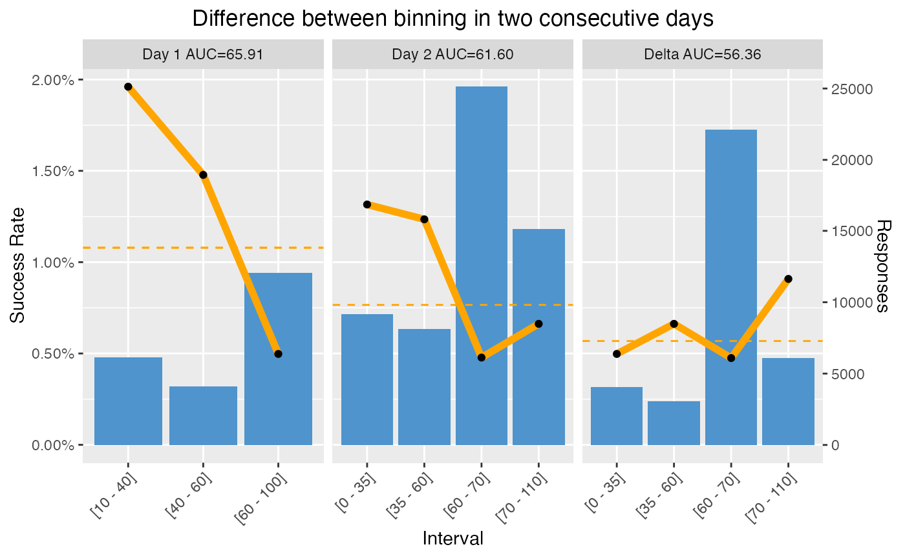
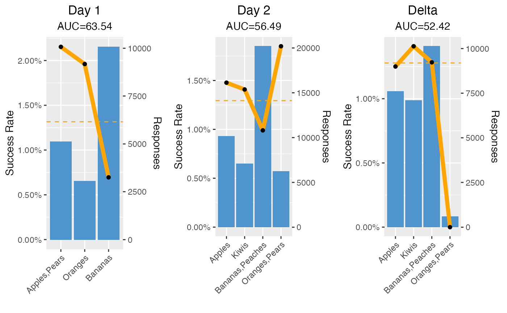

predictor-evolution.RmdThis notebook shows how you can use the ADM datamart to show day-over-day or week-over-week performance or value changes of the predictors.
Prerequisite is an extract of the ADM datamart predictors table that contains multiple snapshots. By default, only the latest state of the predictors is kept, so you will first need to configure that in the settings of the Adaptive system.
Using this data we will now zoom in into a particular action (GoldCard) of one particular model (OmniNBA). The data has been obtained from the CDHSample application but the code should work generically. We have used the models table from the ADM datamart to identify the ModelID of this particular model.
We have (this many) entries and you can easily see that the number of active predictors for this model varies over time.
(plot # active preds over time, exclude binning)
You can also plot the reported predictor performance over time, but note that this will converge to a flat line as predictor performance is cumulative.
(plot predictor performance over time)
If you want to see day-over-day (or week-over-week) performance of the predictors we need to look into the changes in the binning. Performance (AUC) is easily calculated from the number of positives and negatives in the bins. So if the binning would be stable, it would be easy enough to subtract the counts of one day from the counts of the next day and calculate the performance for that particular day.
However the binning changes all the time, so the algorithm that relates the counts from the binning in one day to the binning of the next day is a bit more complex.
For numerics the best you can do is for every bin in day 1, look at the overlap with the boundaries of the bins in day 2 and contribute the counts of day 1 proportionally.
# bins2 - bins1 for a numeric field
subtractNumBinning <- function(bins1, bins2)
{
i1 <- 1
i2 <- 1
deltabinning <- copy(bins2)
while (i1 <= nrow(bins1) && i2 <= nrow(bins2)) {
# cat("index 1 = [", i1, "]", "index 2 = [", i2, "]", fill=T)
overlap_lo <- max(bins1$BinLower[i1], bins2$BinLower[i2])
overlap_hi <- min(bins1$BinUpper[i1], bins2$BinUpper[i2])
if (overlap_hi > overlap_lo) {
portion <- (overlap_hi - overlap_lo) / (bins1$BinUpper[i1] - bins1$BinLower[i1])
# cat("contribute", sprintf("%.1f%%",100*portion), "of binning 1 [", i1, "]", "to binning 2 [", i2, "]", fill = T)
deltabinning$BinPositives[i2] <- deltabinning$BinPositives[i2] - portion*bins1$BinPositives[i1]
deltabinning$BinNegatives[i2] <- deltabinning$BinNegatives[i2] - portion*bins1$BinNegatives[i1]
}
# advance the one that is behind:
if (overlap_hi < bins1$BinUpper[i1]) {
i2 <- i2 + 1
} else if (overlap_hi < bins2$BinUpper[i2]) {
i1 <- i1 + 1
} else {
i2 <- i2 + 1
i1 <- i1 + 1
}
}
deltabinning <- deltabinning[(BinPositives+BinNegatives)>0]
deltabinning[, Performance := auc_from_bincounts(BinPositives, BinNegatives)]
return(deltabinning)
}
For symbolics we first need to split the bin label (and assume there are no comma’s in the original labels), then contribute a fraction of the counts in the bins from day 1 to all the bins in day 2 where those split labels fall into.
subtractSymBinning <- function(bins1, bins2)
{
deltabinning <- copy(bins2)
labelsBin2 <- lapply(strsplit(sym_t2$BinSymbol, split=",", fixed=T), trimws)
for (i1 in seq_len(nrow(bins1))) {
labels <- sapply(unlist(strsplit(bins1$BinSymbol[i1], split=",", fixed=T)), trimws)
portion <- 1/length(labels)
# now look up each of these in the other binning
# NB does not deal with "remaining" symbols or "missing" yet
for (label in labels) {
i2 <- which(unlist(lapply(labelsBin2, function(x) {label %in% x})))[1]
if (!is.na(i2)) {
# cat("contribute", sprintf("%.1f%%",100*portion), "of binning 1 [", i1, "]", "to binning 2 [", i2, "]", fill = T)
deltabinning$BinPositives[i2] <- deltabinning$BinPositives[i2] - portion*bins1$BinPositives[i1]
deltabinning$BinNegatives[i2] <- deltabinning$BinNegatives[i2] - portion*bins1$BinNegatives[i1]
}
}
}
deltabinning <- deltabinning[(BinPositives+BinNegatives)>0]
deltabinning[, Performance := auc_from_bincounts(BinPositives, BinNegatives)]
return(deltabinning)
}
We can apply this to the whole dataset of the same model/action we looked at earlier and get a view of the per-day (or per-week) binning - so not cumulative.
(PIC non-cumulative predictor performance)
With the predictor snapshot data you can also look at other - simpler - metrics, things like the mean value, or the number of missings values for example.
Tracking these is easier and does not even require to reconstruct a “delta binning”.
For example, the daily mean can be derived straight from the data:
\[\bar{x}_\Delta = \frac{E_2\bar{x}_2 - E_1\bar{x}_1}{E_2-E_1}\]
The max/min would also be interesting. We cannot retrieve the daily values of these from the ADM datamart, but you can easily detect a decrease of the minimum and an increase of the maximum.
allbinnings[, .("Average Value" = weighted.mean(BinUpper + BinLower, BinResponseCount)/2), by=t]
#> t Average Value
#> 1: Day 1 AUC=65.91 59.38849
#> 2: Day 2 AUC=61.60 61.56250
#> 3: Delta AUC=56.36 62.37429